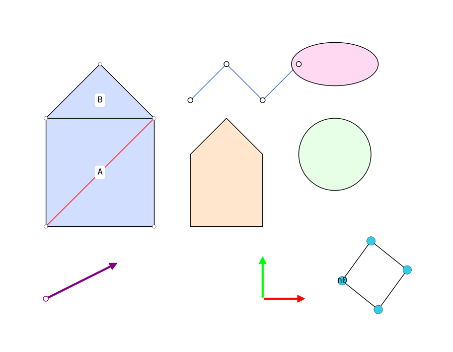

COMPAS Plotter¤
2D visualisation of COMPAS geometry and data structures, powered by matplotlib.
compas_plotter is a lightweight way to draw COMPAS objects in 2D. It is the
COMPAS 2.x successor of the compas_plotters package that shipped inside COMPAS
up to version 1.17, rebuilt on top of the modern
compas.scene system.

Highlights¤
- One entry point —
Plotter.add— dispatches any supported COMPAS object to its matplotlib drawing. - Built on
compas.scene: registers a"Plotter"visualisation context, exactly like the Rhino, Blender and Grasshopper backends. - Dynamic plotting and GIF recording via
Plotter.on.
Quick start¤
from compas.geometry import Point, Line, Polygon
from compas.datastructures import Mesh
from compas_plotter import Plotter
plotter = Plotter(figsize=(8, 5))
mesh = Mesh.from_polyhedron(8)
plotter.add(mesh, show_vertices=True, show_edges=True)
plotter.add(Polygon([[0, 0, 0], [3, 0, 0], [3, 3, 0]]), facecolor=(0.9, 0.9, 1.0))
plotter.add(Line(Point(0, 0, 0), Point(3, 3, 0)), color=(1, 0, 0), draw_as_segment=True)
plotter.add(Point(1.5, 1.5, 0))
plotter.zoom_extents()
plotter.show()
Supported objects¤
| Category | Objects |
|---|---|
| Geometry | Point, Vector, Line, Polyline, Polygon, Circle, Ellipse, Frame |
| Shapes (drawn as XY projections) | Box, Sphere, Cylinder, Cone, Capsule, Torus, Polyhedron |
| Data structures | Mesh, Graph |
Roadmap¤
The following are not yet supported. They are likely to be added as XY
projections, following the existing ShapeObject:
BrepandSurface— tessellate to a mesh, then project (Brepneeds an optional backend such ascompas_occ)NurbsCurve— sampled to a polylineVolMeshandPlane
Next steps¤
Installation¤
Stable¤
Install the latest stable release from PyPI:
This pulls in compas and matplotlib (plus pillow for GIF recording).
Conda¤
If you manage your COMPAS environment with conda, install the dependencies from
conda-forge and compas_plotter from pip:
conda create -n compas-env python=3.12 compas matplotlib pillow
conda activate compas-env
pip install compas_plotter
Latest (development)¤
Install the latest version directly from the git repository:
From source¤
Clone the repository and install it in editable mode with the development dependencies:
git clone https://github.com/compas-dev/compas_plotter.git
cd compas_plotter
pip install -e ".[dev]"
Verify¤
Tutorial¤
compas_plotter draws COMPAS objects onto a matplotlib canvas. The main entry
point is the Plotter class. You add objects to it
with Plotter.add, and each object is dispatched
through the compas.scene system to a
matplotlib-based scene object.
A first plot¤
from compas.geometry import Point
from compas_plotter import Plotter
plotter = Plotter()
plotter.add(Point(0, 0, 0))
plotter.add(Point(1, 0, 0))
plotter.add(Point(1, 1, 0))
plotter.zoom_extents()
plotter.show()
zoom_extents fits the view to the bounding box of everything that has been
added, while preserving the aspect ratio of the figure.
Adding geometry¤
Every supported geometry type is added the same way. Keyword arguments are forwarded to the corresponding scene object to control its appearance.
from compas.geometry import Point, Vector, Line, Polyline, Polygon, Circle, Ellipse, Frame
from compas_plotter import Plotter
plotter = Plotter(figsize=(8, 5))
plotter.add(Line(Point(0, 0, 0), Point(3, 2, 0)), color=(1, 0, 0), draw_as_segment=True)
plotter.add(Polyline([[0, 0, 0], [1, 1, 0], [2, 0, 0]]), color=(0, 0, 1))
plotter.add(Polygon([[3, 0, 0], [5, 0, 0], [5, 2, 0]]), facecolor=(0.9, 0.9, 1.0))
plotter.add(Circle(1.0, frame=Frame([6, 1, 0])))
plotter.add(Ellipse(1.5, 0.8, frame=Frame([9, 1, 0])))
plotter.add(Vector(1, 1, 0), point=Point(0, -2, 0), draw_point=True)
plotter.add(Frame([6, -2, 0]), size=1.0)
plotter.add(Point(0, 0, 0))
plotter.zoom_extents()
plotter.show()
Lines: segments vs. infinite lines¤
A Line in COMPAS is infinite. By default the LineObject clips the line to
the current view box. Pass draw_as_segment=True to draw only the segment
between line.start and line.end.
Points keep a constant size¤
Points (and mesh vertices and graph nodes) are drawn with a fixed on-screen size in points, so they do not grow or shrink when you zoom.
3D shapes¤
3D shapes are drawn as their projection onto the XY plane. A Box, for example,
is projected face by face, so it reads as a solid wireframe regardless of how its
frame is oriented. The same works for Sphere, Cylinder, Cone, Capsule,
Torus and Polyhedron: they are tessellated into a mesh and that mesh is
projected. Curved shapes take u/v keyword arguments to control the
tessellation resolution.
from compas.geometry import Sphere, Cylinder, Cone, Torus, Polyhedron
from compas.geometry import Translation
from compas_plotter import Plotter
plotter = Plotter(figsize=(10, 3))
plotter.add(Sphere(1.0))
plotter.add(Cylinder(0.6, 2.0).transformed(Translation.from_vector([3, 0, 0])))
plotter.add(Cone(0.8, 2.0).transformed(Translation.from_vector([6, 0, 0])), u=12)
plotter.add(Torus(1.0, 0.3).transformed(Translation.from_vector([9, 0, 0])))
plotter.add(Polyhedron.from_platonicsolid(12).transformed(Translation.from_vector([12, 0, 0])))
plotter.zoom_extents()
plotter.show()
The Box below is projected the same way.
from math import radians
from compas.geometry import Box, Frame
from compas_plotter import Plotter
plotter = Plotter(figsize=(8, 5))
# an axis-aligned box projects to a rectangle
plotter.add(Box(3, 2, 1))
# a rotated box keeps its 3D silhouette
frame = Frame([6, 0, 0]).rotated(radians(35), [1, 1, 1], point=[6, 0, 0])
plotter.add(Box(2, 2, 2, frame=frame), facecolor=(0.9, 0.9, 1.0), alpha=0.3)
plotter.zoom_extents()
plotter.show()
Pass fill=False for a pure wireframe, or tune alpha and facecolor to shade
the faces. Because a projection has no depth sorting, faces are not hidden behind
one another — every edge stays visible.
Rotating box animation¤
A good way to confirm the projection is spinning the box and watching the
silhouette update every frame. Rotate the geometry inside a
Plotter.on callback (see
Dynamic plots and animations) and the plotter
reprojects and redraws it:
from math import radians
from compas.geometry import Box, Frame, Rotation
from compas_plotter import Plotter
plotter = Plotter(figsize=(6, 6))
box = Box(2, 2, 2, frame=Frame([0, 0, 0]).rotated(radians(35), [1, 1, 1]))
plotter.add(box, facecolor=(0.9, 0.9, 1.0), alpha=0.3)
# keep the view fixed so the box is seen to rotate, not the camera
plotter.zoom_extents()
rotation = Rotation.from_axis_and_angle([0, 1, 0], radians(6), point=[0, 0, 0])
@plotter.on(interval=0.05, frames=60, record=True, recording="box.gif")
def spin(frame):
box.transform(rotation)
plotter.show()
Each frame applies a small rotation; the six faces are re-projected onto the XY plane, so the wireframe appears to turn in 3D. Any of the shapes above can be animated the same way.
Meshes¤
Meshes reuse the data layer of the COMPAS scene system, so the show_vertices,
show_edges and show_faces flags and the per-element colors work as expected.
from compas.datastructures import Mesh
from compas_plotter import Plotter
mesh = Mesh.from_meshgrid(dx=10, nx=10)
plotter = Plotter(figsize=(8, 8))
plotter.add(
mesh,
show_vertices=True,
show_edges=True,
facecolor={face: (0.9, 0.9, 1.0) for face in mesh.faces()},
)
plotter.zoom_extents()
plotter.show()
Labels are drawn by passing vertextext, edgetext or facetext dictionaries:
Graphs¤
from compas.datastructures import Graph
from compas_plotter import Plotter
graph = Graph()
a = graph.add_node(x=0, y=0, z=0)
b = graph.add_node(x=1, y=1, z=0)
c = graph.add_node(x=2, y=0, z=0)
graph.add_edge(a, b)
graph.add_edge(b, c)
plotter = Plotter()
plotter.add(graph, nodesize=10, nodetext={a: "a", b: "b", c: "c"})
plotter.zoom_extents()
plotter.show()
Scenes and hierarchy¤
Every Plotter owns a PlotterScene, a
subclass of compas.scene.Scene bound to
the "Plotter" context. Plotter.add delegates to it, so you get the full
COMPAS scene tree: parent/child relationships, composed world transformations,
and serialization — the same model used by the Rhino, Blender and Viewer
backends.
from compas.geometry import Point, Translation
from compas_plotter import Plotter
plotter = Plotter()
parent = plotter.add(Point(0, 0, 0))
child = plotter.add(Point(1, 0, 0), parent=parent)
# Transforming the parent moves the child with it.
parent.transformation = Translation.from_vector([5, 0, 0])
assert child.worldtransformation[0, 3] == 5.0
plotter.scene # -> the underlying PlotterScene
plotter.sceneobjects # -> the plotter scene objects in the tree
Drawing is managed by the Plotter (objects are drawn when added, and
Plotter.redraw refreshes them), so you normally do not call Scene.draw
yourself.
Saving¤
Dynamic plots and animations¤
Plotter.on turns a plotter into an animation
loop. The decorated function is called once per frame; mutate your geometry and
the plotter redraws it. Set record and recording to also export a GIF.
API Reference
API Reference¤
The public API of compas_plotter is small:
- compas_plotter — the
Plotterclass, the main entry point for building 2D plots. - compas_plotter.scene — the
"Plotter"visualisation-context scene objects, one per supported COMPAS type. You rarely instantiate these directly;Plotter.addcreates them for you.
Plotter(
view: Viewbox = ((-8.0, 16.0), (-5.0, 10.0)),
figsize: tuple[float, float] = (8.0, 5.0),
dpi: float = 100,
bgcolor: str = "#ffffff",
show_axes: bool = False,
zstack: str = "zorder",
)
Plotter for the 2D visualisation of COMPAS geometry and data structures.
The plotter wraps a matplotlib figure and axes. COMPAS objects added to the
plotter are dispatched through the :mod:compas.scene system to their
registered "Plotter" scene object, which draws them with matplotlib.
Parameters:
-
view(Viewbox, default:((-8.0, 16.0), (-5.0, 10.0))) –The
((xmin, xmax), (ymin, ymax))area zoomed into view. -
figsize(tuple[float, float], default:(8.0, 5.0)) –Size of the figure in inches.
-
dpi(float, default:100) –Resolution of the figure in dots per inch.
-
bgcolor(str, default:'#ffffff') –Background color of the figure canvas, as a matplotlib color.
-
show_axes(bool, default:False) –If True, show the matplotlib axes.
-
zstack(str, default:'zorder') –If
"natural", objects are stacked in the order they are added. If"zorder", objects are stacked by theirzorder.
Attributes:
Examples:
>>> from compas.geometry import Point
>>> from compas_plotter import Plotter
>>> plotter = Plotter()
>>> obj = plotter.add(Point(0, 0, 0))
>>> plotter.zoom_extents()
property
¤
sceneobjects: list[PlotterSceneObject]
The scene objects currently included in the plot.
add(item: Data, **kwargs) -> PlotterSceneObject
Add a COMPAS object to the plot.
Parameters:
-
item(Data) –A COMPAS geometry object or data structure.
-
**kwargs–Visualisation options forwarded to the corresponding scene object.
Returns:
-
The scene object created for the item.–
add_from_list(items: Iterable[Data], **kwargs) -> list[PlotterSceneObject]
draw(pause: float | None = None) -> None
Draw all objects included in the plot.
Parameters:
-
pause(float | None, default:None) –If provided, pause for this many seconds after drawing.
find(item: Data) -> PlotterSceneObject | None
Find the scene object associated with a given COMPAS object.
Parameters:
-
item(Data) –The COMPAS object to look for.
Returns:
-
The matching scene object, or None if the item is not in the plot.–
on(
interval: float | None = None,
frames: int | None = None,
record: bool = False,
recording: str | None = None,
dpi: int = 150,
) -> Callable
Decorate a per-frame callback to create a dynamic (animated) plot.
The decorated function is called once per frame with the frame index as its only argument, and the canvas is redrawn after each call.
Parameters:
-
interval(float | None, default:None) –Time between frames, in seconds.
-
frames(int | None, default:None) –Number of frames to render.
-
record(bool, default:False) –If True, save the animation as a GIF to
recording. -
recording(str | None, default:None) –Output path for the GIF (required when
recordis True). -
dpi(int, default:150) –Resolution of the recorded frames.
Returns:
-
The decorator to apply to the per-frame callback.–
pause(pause: float) -> None
Pause plotting for the given interval.
Parameters:
-
pause(float) –The duration of the pause, in seconds.
redraw(pause: float | None = None) -> None
Redraw all objects and refresh the canvas.
Parameters:
-
pause(float | None, default:None) –If provided, pause for this many seconds after redrawing.
register_listener(listener: Callable) -> None
Register a listener for matplotlib pick events.
Parameters:
-
listener(Callable) –The handler called on every
pick_event.
Plotter scene objects and their registration.
This subpackage is the "Plotter" visualisation-context backend, mirroring the
structure of compas_rhino.scene and compas_blender.scene: it provides a
scene object per supported COMPAS type and registers each one under the
"Plotter" context.
BoxObject(
linewidth: float = 1.0,
linestyle: str = "solid",
facecolor: Color | Sequence[float] = (0.9, 0.9, 1.0),
edgecolor: Color | Sequence[float] = (0.0, 0.0, 0.0),
fill: bool = True,
alpha: float = 0.3,
**kwargs,
)
Plotter scene object for :class:compas.geometry.Box.
The box is drawn as its projection onto the XY plane: each of the six faces is projected to a semi-transparent polygon and the twelve edges are drawn on top, so the box reads as a solid regardless of its orientation.
Parameters:
-
linewidth(float, default:1.0) –Width of the edges.
-
linestyle(str, default:'solid') –Matplotlib line style (
"solid","dotted","dashed","dashdot"). -
facecolor(Color | Sequence[float], default:(0.9, 0.9, 1.0)) –Color of the faces.
-
edgecolor(Color | Sequence[float], default:(0.0, 0.0, 0.0)) –Color of the edges.
-
fill(bool, default:True) –If True, fill the faces.
-
alpha(float, default:0.3) –Transparency of the faces, between 0 and 1.
Redraw the object, reflecting any changes to its geometry or settings.
The default implementation clears the existing matplotlib artists and draws again. Subclasses may override this to update artists in place.
CircleObject(
linewidth: float = 1.0,
linestyle: str = "solid",
facecolor: Color | Sequence[float] = (1.0, 1.0, 1.0),
edgecolor: Color | Sequence[float] = (0.0, 0.0, 0.0),
fill: bool = True,
alpha: float = 1.0,
**kwargs,
)
Plotter scene object for :class:compas.geometry.Circle.
The circle is drawn as its projection onto the XY plane (center and radius); any out-of-plane orientation of the circle frame is ignored.
Parameters:
-
linewidth(float, default:1.0) –Width of the circle boundary.
-
linestyle(str, default:'solid') –Matplotlib line style (
"solid","dotted","dashed","dashdot"). -
facecolor(Color | Sequence[float], default:(1.0, 1.0, 1.0)) –Color of the interior of the circle.
-
edgecolor(Color | Sequence[float], default:(0.0, 0.0, 0.0)) –Color of the boundary of the circle.
-
fill(bool, default:True) –If True, fill the interior of the circle.
-
alpha(float, default:1.0) –Transparency of the circle, between 0 and 1.
Redraw the object, reflecting any changes to its geometry or settings.
The default implementation clears the existing matplotlib artists and draws again. Subclasses may override this to update artists in place.
EllipseObject(
linewidth: float = 1.0,
linestyle: str = "solid",
facecolor: Color | Sequence[float] = (1.0, 1.0, 1.0),
edgecolor: Color | Sequence[float] = (0.0, 0.0, 0.0),
fill: bool = True,
alpha: float = 1.0,
**kwargs,
)
Plotter scene object for :class:compas.geometry.Ellipse.
The ellipse is drawn as its projection onto the XY plane (center, major and minor axes); any out-of-plane orientation of the ellipse frame is ignored.
Parameters:
-
linewidth(float, default:1.0) –Width of the ellipse boundary.
-
linestyle(str, default:'solid') –Matplotlib line style (
"solid","dotted","dashed","dashdot"). -
facecolor(Color | Sequence[float], default:(1.0, 1.0, 1.0)) –Color of the interior of the ellipse.
-
edgecolor(Color | Sequence[float], default:(0.0, 0.0, 0.0)) –Color of the boundary of the ellipse.
-
fill(bool, default:True) –If True, fill the interior of the ellipse.
-
alpha(float, default:1.0) –Transparency of the ellipse, between 0 and 1.
Redraw the object, reflecting any changes to its geometry or settings.
The default implementation clears the existing matplotlib artists and draws again. Subclasses may override this to update artists in place.
FrameObject(
size: float = 1.0,
xcolor: tuple[float, float, float] = (1.0, 0.0, 0.0),
ycolor: tuple[float, float, float] = (0.0, 1.0, 0.0),
pointsize: float = 5,
pointcolor: tuple[float, float, float] = (0.0, 0.0, 0.0),
**kwargs,
)
Plotter scene object for :class:compas.geometry.Frame.
The frame is drawn as its projection onto the XY plane: a red arrow for the X axis and a green arrow for the Y axis, both starting at the frame origin, with a disc marking the origin in between the two arrows.
Parameters:
-
size(float, default:1.0) –Length of the axis arrows, in data units.
-
xcolor(tuple[float, float, float], default:(1.0, 0.0, 0.0)) –Color of the X-axis arrow.
-
ycolor(tuple[float, float, float], default:(0.0, 1.0, 0.0)) –Color of the Y-axis arrow.
-
pointsize(float, default:5) –Size of the origin marker, in points.
-
pointcolor(tuple[float, float, float], default:(0.0, 0.0, 0.0)) –Color of the origin marker.
Redraw the object, reflecting any changes to its geometry or settings.
The default implementation clears the existing matplotlib artists and draws again. Subclasses may override this to update artists in place.
GraphObject(
nodesize: float = 5,
edgewidth: float = 1.0,
nodecolor=(1.0, 1.0, 1.0),
edgecolor=(0.0, 0.0, 0.0),
sizepolicy: str = "absolute",
nodetext: dict | None = None,
edgetext: dict | None = None,
**kwargs,
)
Plotter scene object for :class:compas.datastructures.Graph.
Reuses the data layer of the COMPAS 2.x base graph scene object (the
show_nodes/edges flags and the per-element color/size settings, and the
node_xyz coordinate map) and provides the matplotlib drawing backend,
including optional labels.
Parameters:
-
nodesize(float, default:5) –Size of the node markers.
-
edgewidth(float, default:1.0) –Width of the edges.
-
nodecolor–Color of the nodes. A single color, or a dict mapping nodes to colors.
-
edgecolor–Color of the edges. A single color, or a dict mapping edges to colors.
-
sizepolicy(str, default:'absolute') –If
"absolute",nodesizeis scaled by the plotter resolution, giving nodes a constant on-screen size (the default). If"relative",nodesizeis scaled by the number of nodes. -
nodetext(dict | None, default:None) –A dict mapping nodes to label strings.
-
edgetext(dict | None, default:None) –A dict mapping edges to label strings.
Redraw the object, reflecting any changes to its geometry or settings.
The default implementation clears the existing matplotlib artists and draws again. Subclasses may override this to update artists in place.
LineObject(
draw_points: bool = False,
draw_as_segment: bool = False,
linewidth: float = 1.0,
linestyle: str = "solid",
color: Color | Sequence[float] = (0.0, 0.0, 0.0),
**kwargs,
)
Plotter scene object for :class:compas.geometry.Line.
By default the line is treated as infinite and clipped to the current view
box. Set draw_as_segment to draw only the segment between start and end.
Parameters:
-
draw_points(bool, default:False) –If True, also draw the start and end points of the line.
-
draw_as_segment(bool, default:False) –If True, draw only the segment between start and end instead of the infinite line clipped to the view box.
-
linewidth(float, default:1.0) –Width of the line.
-
linestyle(str, default:'solid') –Matplotlib line style (
"solid","dotted","dashed","dashdot"). -
color(Color | Sequence[float], default:(0.0, 0.0, 0.0)) –Color of the line.
clip() -> list | None
Compute the intersection of the (infinite) line with the current view box.
Returns:
-
The two clipping points, or None if the line does not cross the view box.–
Redraw the object, reflecting any changes to its geometry or settings.
The default implementation clears the existing matplotlib artists and draws again. Subclasses may override this to update artists in place.
MeshObject(
vertexsize: float = 5,
edgewidth: float = 1.0,
facecolor=(0.9, 0.9, 0.9),
edgecolor=(0.0, 0.0, 0.0),
vertexcolor=(1.0, 1.0, 1.0),
vertextext: dict | None = None,
edgetext: dict | None = None,
facetext: dict | None = None,
**kwargs,
)
Plotter scene object for :class:compas.datastructures.Mesh.
Reuses the data layer of the COMPAS 2.x base mesh scene object (the
show_vertices/edges/faces flags and the per-element color/size settings)
and provides the matplotlib drawing backend, including optional labels.
Parameters:
-
vertexsize(float, default:5) –On-screen size of the vertex markers, in points.
-
edgewidth(float, default:1.0) –Width of the edges.
-
facecolor–Color of the faces. A single color, or a dict mapping faces to colors.
-
edgecolor–Color of the edges. A single color, or a dict mapping edges to colors.
-
vertexcolor–Color of the vertices. A single color, or a dict mapping vertices to colors.
-
vertextext(dict | None, default:None) –A dict mapping vertices to label strings.
-
edgetext(dict | None, default:None) –A dict mapping edges to label strings.
-
facetext(dict | None, default:None) –A dict mapping faces to label strings.
Redraw the object, reflecting any changes to its geometry or settings.
The default implementation clears the existing matplotlib artists and draws again. Subclasses may override this to update artists in place.
PlotterScene(
plotter: Plotter | None = None, name: str = "PlotterScene", context: str = "Plotter"
)
A :class:compas.scene.Scene bound to the "Plotter" visualisation context.
This is the container behind a :class:compas_plotter.Plotter, mirroring the
way compas_viewer wraps :class:compas.scene.Scene in a ViewerScene.
It stores a back-reference to the owning plotter and injects it into every
scene object it creates, so the objects can draw onto the plotter axes.
Parameters:
-
plotter(Plotter | None, default:None) –The plotter that owns this scene.
-
name(str, default:'PlotterScene') –The name of the scene.
-
context(str, default:'Plotter') –The visualisation context. Fixed to
"Plotter"; overriding it would prevent the plotter scene objects from being resolved.
add(item: Data | SceneObject, parent=None, **kwargs) -> SceneObject
Add an item to the scene and draw it on the plotter canvas.
Extends :meth:compas.scene.Scene.add by injecting the owning plotter
into the created scene object and drawing it immediately, so that adding
an object to a live plot shows it right away.
Parameters:
-
item(Data | SceneObject) –The COMPAS object (or ready-made scene object) to add.
-
parent–The parent scene object in the scene tree.
-
**kwargs–Visualisation options forwarded to the scene object.
Returns:
-
The scene object created for the item.–
remove(sceneobject: SceneObject) -> None
Remove a scene object, clearing its matplotlib artists first.
Parameters:
-
sceneobject(SceneObject) –The scene object to remove.
Base class for all scene objects drawn by a :class:compas_plotter.Plotter.
This is the COMPAS 2.x replacement for the 1.x PlotterArtist. It stores a
back-reference to the owning plotter so concrete objects can draw onto its
matplotlib axes, and provides shared bookkeeping for the matplotlib artists
created during drawing.
Parameters:
-
plotter(Plotter | None, default:None) –The plotter that owns this scene object. Injected by :meth:
Plotter.add. -
zorder(int, default:1000) –The stacking order of this object on the canvas.
draw() -> list
Draw the object on the plotter canvas. Implemented by subclasses.
Returns:
-
The matplotlib artists created for this object (also stored on– -
``self._mpl_objects``), matching the :class:`compas.scene.SceneObject`– -
contract that ``draw`` returns the created visualisation handles.–
Redraw the object, reflecting any changes to its geometry or settings.
The default implementation clears the existing matplotlib artists and draws again. Subclasses may override this to update artists in place.
PointObject(
size: float = 5,
facecolor: Color | Sequence[float] = (1.0, 1.0, 1.0),
edgecolor: Color | Sequence[float] = (0.0, 0.0, 0.0),
**kwargs,
)
Plotter scene object for :class:compas.geometry.Point.
The point is drawn as a disc with a fixed on-screen size (in points), so it keeps a constant size regardless of the zoom level.
Parameters:
-
size(float, default:5) –The size of the point marker, in points.
-
facecolor(Color | Sequence[float], default:(1.0, 1.0, 1.0)) –Color of the interior of the marker.
-
edgecolor(Color | Sequence[float], default:(0.0, 0.0, 0.0)) –Color of the boundary of the marker.
Redraw the object, reflecting any changes to its geometry or settings.
The default implementation clears the existing matplotlib artists and draws again. Subclasses may override this to update artists in place.
PolygonObject(
linewidth: float = 1.0,
linestyle: str = "solid",
facecolor: Color | Sequence[float] = (1.0, 1.0, 1.0),
edgecolor: Color | Sequence[float] = (0.0, 0.0, 0.0),
fill: bool = True,
alpha: float = 1.0,
**kwargs,
)
Plotter scene object for :class:compas.geometry.Polygon.
Parameters:
-
linewidth(float, default:1.0) –Width of the polygon boundary.
-
linestyle(str, default:'solid') –Matplotlib line style (
"solid","dotted","dashed","dashdot"). -
facecolor(Color | Sequence[float], default:(1.0, 1.0, 1.0)) –Color of the interior of the polygon.
-
edgecolor(Color | Sequence[float], default:(0.0, 0.0, 0.0)) –Color of the boundary of the polygon.
-
fill(bool, default:True) –If True, fill the interior of the polygon.
-
alpha(float, default:1.0) –Transparency of the polygon, between 0 and 1.
Redraw the object, reflecting any changes to its geometry or settings.
The default implementation clears the existing matplotlib artists and draws again. Subclasses may override this to update artists in place.
PolylineObject(
draw_points: bool = True,
linewidth: float = 1.0,
linestyle: str = "solid",
color: Color | Sequence[float] = (0.0, 0.0, 0.0),
**kwargs,
)
Plotter scene object for :class:compas.geometry.Polyline.
Parameters:
-
draw_points(bool, default:True) –If True, also draw the points of the polyline.
-
linewidth(float, default:1.0) –Width of the polyline.
-
linestyle(str, default:'solid') –Matplotlib line style (
"solid","dotted","dashed","dashdot"). -
color(Color | Sequence[float], default:(0.0, 0.0, 0.0)) –Color of the polyline.
Redraw the object, reflecting any changes to its geometry or settings.
The default implementation clears the existing matplotlib artists and draws again. Subclasses may override this to update artists in place.
ShapeObject(
u: int = 16,
v: int = 16,
linewidth: float = 0.5,
linestyle: str = "solid",
facecolor: Color | Sequence[float] = (0.9, 0.9, 1.0),
edgecolor: Color | Sequence[float] = (0.0, 0.0, 0.0),
fill: bool = True,
alpha: float = 0.2,
**kwargs,
)
Plotter scene object for :class:compas.geometry.Shape.
Handles all COMPAS solids (Sphere, Cylinder, Cone, Capsule, Torus,
Polyhedron, ...). The shape is tessellated with
:meth:compas.geometry.Shape.to_vertices_and_faces and drawn as the
projection of that mesh onto the XY plane: each face becomes a
semi-transparent polygon with a solid outline, so the shape reads as a solid
wireframe regardless of its orientation.
Parameters:
-
u(int, default:16) –Number of faces around curved shapes (longitude). Ignored by shapes without a resolution, such as :class:
compas.geometry.Polyhedron. -
v(int, default:16) –Number of faces along curved shapes (latitude), where applicable.
-
linewidth(float, default:0.5) –Width of the edges.
-
linestyle(str, default:'solid') –Matplotlib line style (
"solid","dotted","dashed","dashdot"). -
facecolor(Color | Sequence[float], default:(0.9, 0.9, 1.0)) –Color of the faces.
-
edgecolor(Color | Sequence[float], default:(0.0, 0.0, 0.0)) –Color of the edges.
-
fill(bool, default:True) –If True, fill the faces.
-
alpha(float, default:0.2) –Transparency of the faces, between 0 and 1.
Redraw the object, reflecting any changes to its geometry or settings.
The default implementation clears the existing matplotlib artists and draws again. Subclasses may override this to update artists in place.
VectorObject(
point: Point | None = None,
draw_point: bool = False,
color: Color | Sequence[float] = (0.0, 0.0, 0.0),
**kwargs,
)
Plotter scene object for :class:compas.geometry.Vector.
The vector is drawn as an arrow, by default starting at the world origin.
Parameters:
-
point(Point | None, default:None) –The base point of the vector. Defaults to the world origin.
-
draw_point(bool, default:False) –If True, also draw the base point of the vector.
-
color(Color | Sequence[float], default:(0.0, 0.0, 0.0)) –Color of the arrow.
Redraw the object, reflecting any changes to its geometry or settings.
The default implementation clears the existing matplotlib artists and draws again. Subclasses may override this to update artists in place.
Changelog¤
All notable changes to this project will be documented in this file.
The format is based on Keep a Changelog and this project adheres to Semantic Versioning.
[1.0.0-rc0] 2026-07-11¤
Added¤
- Initial COMPAS 2.x port of
compas_plotters(the package that shipped inside COMPAS up to 1.17). Plotterclass for 2D matplotlib visualisation, including dynamic plotting (Plotter.on) with optional GIF recording."Plotter"visualisation context built oncompas.scene.- Scene objects for
Point,Vector,Line,Polyline,Polygon,Circle,EllipseandFrame. - Scene objects for the
MeshandGraphdata structures, with vertex/edge/face and node/edge labels. PlotterScene, acompas.scene.Scenesubclass bound to the"Plotter"context. EveryPlotternow owns one, giving a hierarchical scene tree (parent/child transforms), serialization, and API symmetry with the Rhino, Blender and Viewer backends.- Scene object for
Box, drawn as the exact XY projection of its six faces. - Shared
ShapeObjectdrawingSphere,Cylinder,Cone,Capsule,TorusandPolyhedronas tessellated XY projections, withu/vresolution control.
Changed¤
GraphObject.node_xyzandMeshObject.vertex_xyzreturn fresh view coordinates on every access instead of a mapping cached at first access, so a redraw in aPlotter.onanimation loop picks up changes to the coordinates of the underlying datastructure.
Removed¤
License¤
MIT License
Copyright (c) 2026 COMPAS Association
Permission is hereby granted, free of charge, to any person obtaining a copy
of this software and associated documentation files (the "Software"), to deal
in the Software without restriction, including without limitation the rights
to use, copy, modify, merge, publish, distribute, sublicense, and/or sell
copies of the Software, and to permit persons to whom the Software is
furnished to do so, subject to the following conditions:
The above copyright notice and this permission notice shall be included in all
copies or substantial portions of the Software.
THE SOFTWARE IS PROVIDED "AS IS", WITHOUT WARRANTY OF ANY KIND, EXPRESS OR
IMPLIED, INCLUDING BUT NOT LIMITED TO THE WARRANTIES OF MERCHANTABILITY,
FITNESS FOR A PARTICULAR PURPOSE AND NONINFRINGEMENT. IN NO EVENT SHALL THE
AUTHORS OR COPYRIGHT HOLDERS BE LIABLE FOR ANY CLAIM, DAMAGES OR OTHER
LIABILITY, WHETHER IN AN ACTION OF CONTRACT, TORT OR OTHERWISE, ARISING FROM,
OUT OF OR IN CONNECTION WITH THE SOFTWARE OR THE USE OR OTHER DEALINGS IN THE
SOFTWARE.